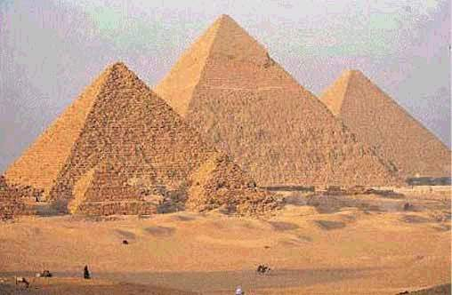
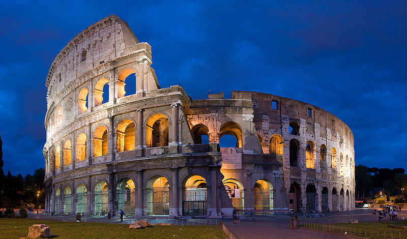
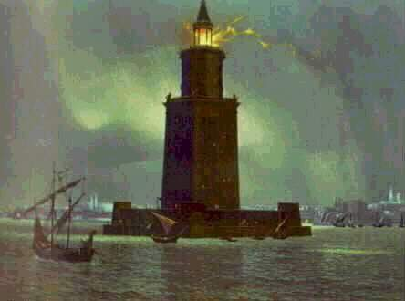
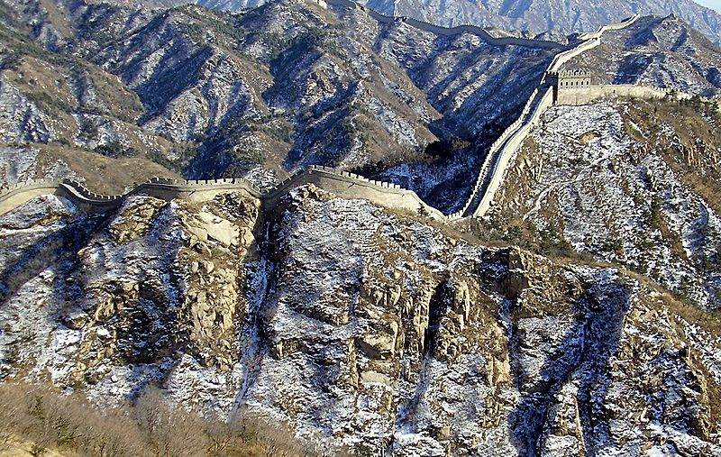
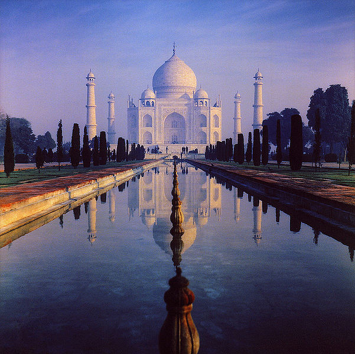
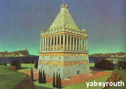
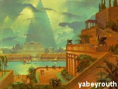

| Aobut Wanders(or the Seven Wonders of the ancient world) refers to the fantastic facilities of classical antiquity,that have been mentioned in many tourist guidebooks which famously traded among tourists in ancient Greece. Especially in the first and second centuries BC. Most prominent of these booklets is a booklet written by Antipater Seedawi and Byzantine Fillon, the booklet includes seven wonders of all located around the Mediterranean basin. It was authored several books followed the original booklet and often recounted seven wonders . Pyramid of Giza is the only curiosities, which is still relatively intact until the present time Historical backgroundConquistadors ancient Greeks open most Maaraf of the world in the fourth century BC, making Greeks tourists gave the opportunity and ease of access and visit the ancient civilized countries, such as Pharaonic, Persian and Babylonian civilization, and fascinate the tourists monuments and wonders they have seen in these countries, began the tourists register Marooh on paper they remember no really. Each person carries his own version of this list, but the best existing copies were named for Greek poet Antipater Seedawi, which is composed of 140 years BC. He also wrote a mathematician Philo Byzantine book called (seven world landmarks), but the only manuscript that remained of this book said only six wonders, all of which agreed with Antipater Seedawi. The latter has been replaced by a copy in a fantastic Lighthouse of Alexandria walls of Babylon. Before the construction of the statue of Rhodes replaced authors statue miraculously Ishtar Gate . Alexandria Museum and save copies of reference books from each of Herodotus and architect Callimachus Alkorana, talking about the seven wonders of the ancient world. The statue of Rhodes last of these wonders building, it has ended up built in the year 280 BC, and the first was ephemeral, because of the earthquake that happened in 225/226 BC, and therefore, the seven wonders remained resilient at the same time for a period not exceeding 60 years. |
       |